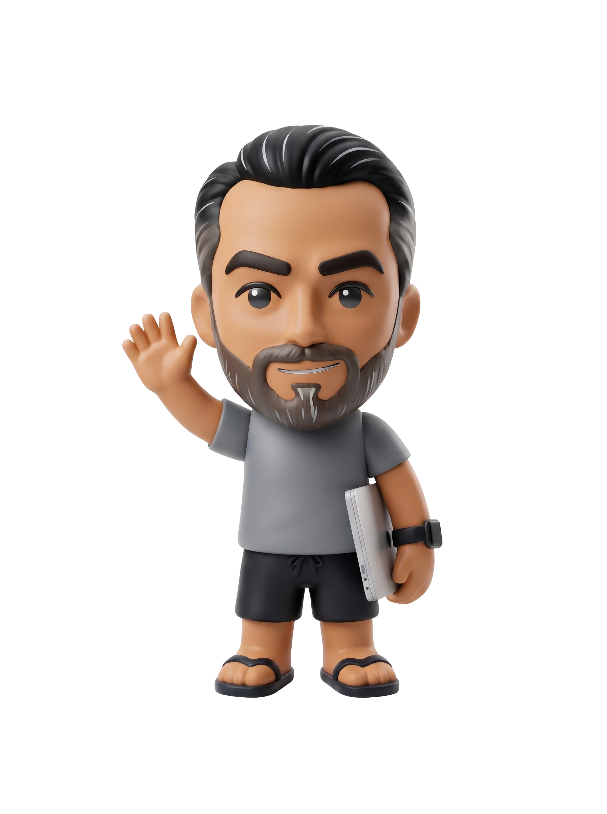

UI DesignArt DirectionBrandingProduction ArtUI DesignArt DirectionBrandingProduction Art
BrandingProduction ArtUI DesignArt DirectionBrandingProduction ArtUI DesignArt Direction
Art DirectionBrandingProduction ArtUI DesignArt DirectionBrandingProduction ArtUI Design

Mauro Facciolla
Graphic & UI Designer — San Diego, CA
“Design is thinkingmade visible”
— Saul Bass
I’m Mauro Facciolla, a senior UI/UX and brand designer based in
San Diego. I spend most of my time designing clean, intuitive interfaces, building
organized Figma design systems, and shaping distinct brand identities.
Because I have a background in visual craft alongside full-stack development
training, I design with how things actually get built in mind. I don’t take on
coding jobs these days, but that technical literacy means no guesswork for engineers
and zero friction during handoff. Paired with modern AI tools to move from concept
to prototype faster, I focus on delivering thoughtful, polished work that just works
when it hits the screen.
UI/UX Design
Figma
Design Systems
Brand Identity
Visual Design
Interactive Prototyping
Dev-Ready Handoff
Adobe Creative Cloud
Design Tokens
AI-Accelerated Workflow
Responsive Layouts
15+
years of visual craft, UI/UX & design systems
40+
projects delivered across branding, UI/UX & digital platforms
0to1
concept to launch — from brand identity to digital systems
↳ Process & velocity
AI in my workflow
I use AI to accelerate design thinking, stress-test interactions early, and move from raw concept to production-ready design systems in a fraction of the time.
A few of the people I've designed for, in their own words.
“01 / 04
Working with Mauro is effortless. He just gets it. You give him an idea and he delivers finished, beautiful work without needing any hand-holding. From our websites to printed materials, he’s been an essential partner for the whole Ki’s family.
BHBarry HolcombKi’s Kitchen
“02 / 04
Mauro is an exceptional designer whose creativity, strategic guidance, and meticulous attention to detail have been invaluable in strengthening the US HAEA brand. His ability to consistently deliver outstanding work on time truly sets him apart—and he approaches every project with kindness, respect, and deep professionalism.
Mauro did excellent work elevating our brand and digital experience at MelloMe. He took our complex requirements and delivered an intuitive, polished design. His clear communication and fast turnaround made our collaboration effortless. It was fantastic working with him. I highly recommend him.
ATAlastair ThompsonMelloMe
“04 / 04
I’ve worked with Mauro for many years on many projects. He remains the easiest designer I have ever worked with, clearly understanding what is needed with minimal input and a pleasure to interact with.